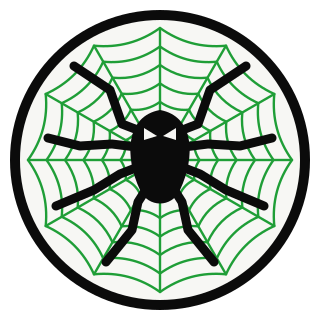
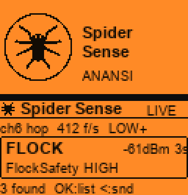

Operation Debrief
A Flipper Zero surveillance-device field sensor — from a custom firmware, through a companion app, to a live feed on the Anansi intelligence globe.
Spider Sense turns a Flipper Zero and a cheap ESP32 Wi-Fi board into a pocket detector for surveillance hardware — Flock ALPR cameras, Axon gear, generic IP cameras, Ring, Wi-Fi deauthers, evil-twin access points and pentest kit — and then pipes what it finds into Anansi, the regional intelligence globe, as a mappable layer. It is the field-sensor arm of Operation Anansi.
The work came in three parts, in this order: a custom Flipper firmware to live on (?xOS), the sensor + app that are the real payload (Spider Sense), and the bridge that feeds it back to the globe (Anansi integration).
Before the sensor, the handheld needed its own identity. ?xOS (by whoXisXhe) is a personal Flipper Zero firmware that swaps the stock dolphin for a spider/ghost world. It was built twice on purpose: first on RogueMaster — a full custom firmware with hundreds of bundled tools, where ~523 of its apps compiled cleanly after a build-and-triage pass — then rebuilt from scratch on the official Flipper firmware (1.4.3, API 87.1) for a clean, upstream-compatible base, renamed ?xOS.
Every piece of dolphin art is replaced by original characters drawn in code — generic arcade-style ghosts and a masked web-slinger, not anybody's licensed mascots — from a Python pipeline that renders 1-bit frames with the Flipper's own fonts: eight idle animations (a web-weaver, a graveyard float, peek-a-boo, rise-from-grave, a corridor chase, a conga line, a spooked jump, a vanish), plus every system screen (success, save, NFC/RFID, Sub-GHz, U2F, pairing, the passport portraits, the CLI banner). Spider Sense ships inside it.
The detector itself is the SquachWatch engine re-stated as a headless serial sensor for the official Flipper Wi-Fi Dev Board (ESP32-S2). It puts the radio in listen-only mode, hops channels 1–13, and matches every frame against SquachWatch's signature tables — the same OUI / SSID / behavior rules that power the full device — then streams one text line per finding out of UART0 to the Flipper's GPIO pins (13/14) at 115200. No network, no beacon of its own: it only listens, so nothing in the room can tell it is there.
One hard limit shaped everything: the S2 has no Bluetooth radio at all. So the whole Wi-Fi catalog works — Flock, Axon, ALPR, cameras, Ring, deauth floods, evil-twin APs, and pentest gear like Pwnagotchi and the Wi-Fi Pineapple — but the Bluetooth half of SquachWatch (AirTags, trackers, camera glasses, BLE skimmers, Remote ID drones) sits dark until the sensor moves to a Bluetooth-capable board. The code for those detections already exists; the chip just can't run them.
This is the core of the project. Spider Sense is a native Flipper Zero app
(.fap) that reads the sensor's lines over the GPIO UART and turns them into a live
operator display. It opens on an Anansi splash, then shows the latest detection, a running
list of the last 32, and a detail view per device (type, vendor, MAC, RSSI, channel,
confidence). Each new detection buzzes the Flipper, flashes the LED, and chirps — the
LED on the board flashes too, so it works even glanced-at in a pocket.
Controls map to the pad: OK opens the list, Up pauses, Down locks or
hops the channel, Left toggles sound, Right steps the minimum confidence
(LOW → MED → HIGH) so a passing ESP32 dev board doesn't cry wolf as a possible Flock camera.
It's built against the dev-channel SDK so the same .fap loads on
RogueMaster, Momentum, Unleashed and official firmware — and confirmed LIVE on real
hardware, streaming detections from the board on the header.

The board and the Flipper talk in plain comma-separated text, one record per line, so any ESP32 that speaks it works with the app and any terminal can read it. Free text (vendor, SSID) always comes last with its separators scrubbed, so one odd network name can never split a record.
SQW,HELLO,<firmware>,flipper-devboard,wifi SQW,STAT,<uptime>,<frames/s>,<channel>,<hopping>,<running>,<total>,<dropped> SQW,DET,<NEW|AGAIN|SEEN>,<TYPE>,<H|M|L>,<MAC>,<rssi>,<channel>,<hits>,<vendor>,<name>
That same line format is what the Anansi side consumes — which is what made the integration clean.
This is where the two projects tie back together. Anansi (the God's Eye
View–based intelligence globe) already renders CCTV, traffic and regional feeds; Spider Sense
adds ground truth — real surveillance hardware, detected in the field, plotted where it
was seen. A new flipperDetections layer brings the sensor onto the globe:
A dev-server serial middleware (in vite.config.js, same pattern as
Anansi's other proxies) reads the Flipper's COM port — fed by the Flipper's own USB-UART
bridge — parses the SQW,* stream into memory, writes a capture CSV, and serves the
detections as GeoJSON. A dedicated live layer re-fetches on an interval, so new
detections appear on the globe without toggling anything, and while it's enabled the
browser quietly posts its geolocation so live hits land at the operator's real position. For
precise after-the-fact mapping, a GPX import timestamp-matches a logged phone track to
the capture so every detection gets exact coordinates — wardriving, but for surveillance
gear. Because the detections carry type and MAC, they can be cross-checked against Anansi's
existing CCTV catalog: the globe says a camera should be here; Spider Sense confirms it's live
and hands over its hardware address.
The integration lives in the Anansi app repo; this sensor and app live here. The
SQW protocol above is the seam between them.
FIELD HANDHELD OPERATOR / GLOBE
┌──────────────────────┐ UART 115200 ┌───────────────┐ USB ┌────────────────────┐
│ ESP32-S2 Wi-Fi board │ ── 13/14 ───▶ │ Flipper Zero │ ─────▶ │ PC — Anansi (vite) │
│ Spider Sense sensor │ │ · ?xOS │ │ serial middleware │
│ · ch 1–13 hop │ ◀── cmds ──── │ · Spider Sense│ ◀──── │ → /api/flipper │
│ · SquachWatch match │ │ app (.fap) │ │ → GeoJSON layer │
│ · SQW,* lines out │ │ · USB-UART br. │ │ → 3D globe + CCTV │
└──────────────────────┘ └───────────────┘ └────────────────────┘
listens only shows + alerts maps + cross-checks
(+ phone GPS / GPX)
.fap only loads when its API major
matches the firmware's and its minor is ≤. Built against the dev-channel SDK so the app
loads across RogueMaster / Momentum / Unleashed / official instead of one firmware only.main.Claude (Anthropic) was used throughout as a coding, debugging and design assistant — writing the ESP32 sensor build and the Flipper app, porting ?xOS onto the official firmware, generating the original ghost/spider art pipeline, and building the Anansi data layer and this debrief. The hardware decisions, the real-device testing, and every commit were driven directly; Claude functioned as a pair-programming and research tool, not an autonomous builder.
A custom Flipper firmware, a field sensor, and a companion app were built end to end and confirmed live on real hardware — a handheld that detects surveillance gear on the air — and then wired back into the Anansi intelligence globe as a mappable, self-locating feed. ?xOS gave it a home; Spider Sense is the payload; the Anansi integration is what makes a detection in a parking lot show up as a pin on the map. Wi-Fi is done and running; Bluetooth is one board away.